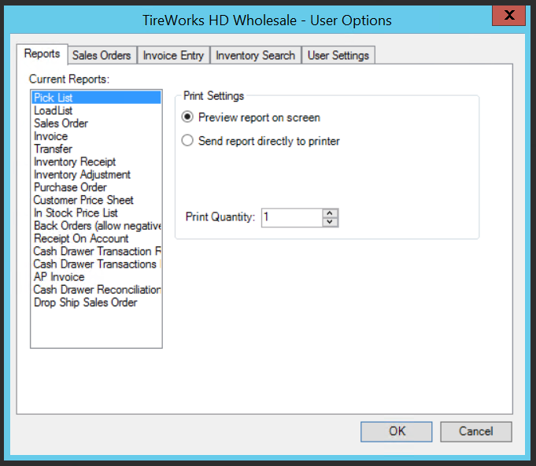
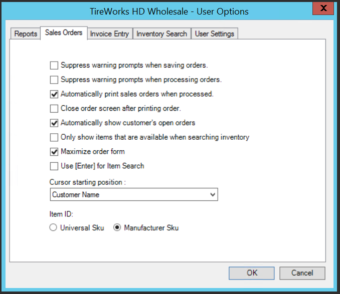
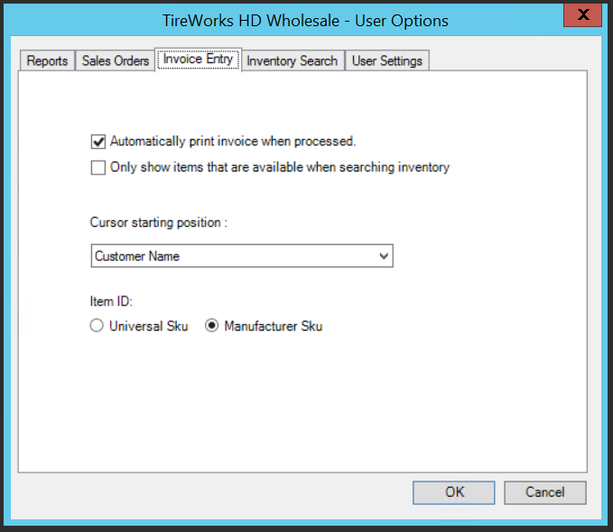
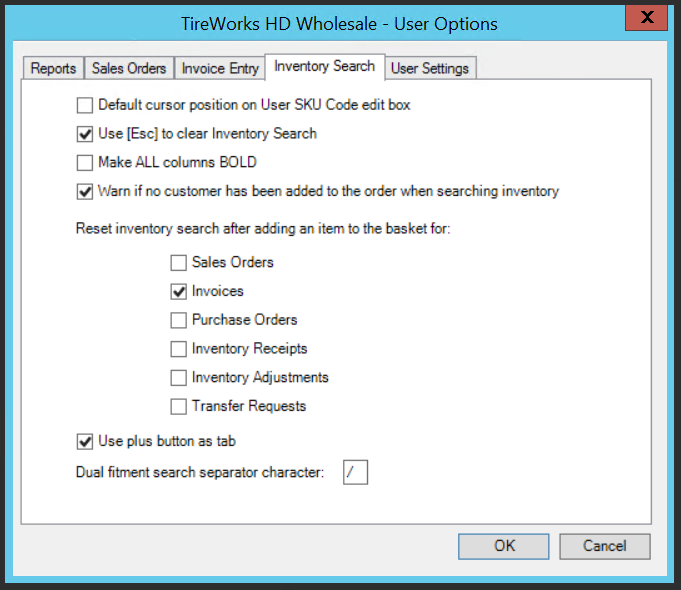

User Options
Ability to define and modify optional information by user.
Select Tools from Application Tool Bar and then Options.
Reports Tab

Allows User to setup print settings specifically related to their user credentials- Select Desired Report Type
- Toggle Preview or Send Directly to printer
- Select printer icon and select desired default printer
- Set desired print quantity
- Select OK
Sales Order Tab

Allows user to set specific settings based on user credentials.Default Settings most commonly used
-
- Automatically show customer’s open order
- Maximize order form
- Cursor Starting Position – Customer Name
- Also desired is account number if user has memorized account numbers
- Item ID – Manufacturer Sku
Invoice Entry Tab

Allows user to set specific settings based on user credentials.Default Settings most commonly used
-
- Automatically print invoice when process
- This is at NEW INVOICE and will be based on setting in print setup whether goes directly to printer or displays a print preview at time of selecting process
- Cursor starting position – Customer Name
- Also desired is account number if user has memorized account numbers
- Item ID – Manufacturer Sku
- Automatically print invoice when process
Inventory Search Tab

Allows user to set specific settings based on user credentials.Default Settings most commonly used
-
- Use ESC to clear inventory search
- Warn if no customer has been added to the order when searching inventory
- Reset inventory search after adding an item to the basket
- Set this based on the documents you will be using and the desire to go back to the global search box after every add.
- This is very helpful when creating a manual PO, inventory receipt or inventory adjustment.
- Use plus key as tab
- Dual fitment separator character – DO NOT CHANGE FROM ‘/’
- Inventory generally loaded prior to go live using ‘/’